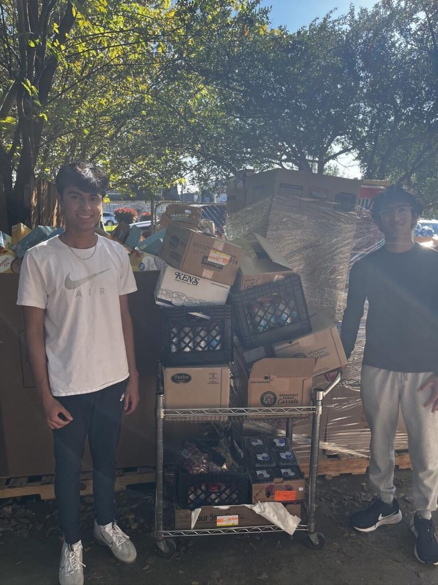

Turning excess food into meaningful support
We hope to make an impact in our community by reducing food waste and fighting hunger through food rescue, volunteer service, and community partnerships. By spreading awareness, redistributing surplus food, and supporting local pantries, shelters, and families, we work to turn excess food into meaningful support for those who need it most.
Two numbers that shouldn’t exist side by side
In the Dallas-Fort Worth metroplex alone, an estimated 405,000 tons of food are wasted each year by restaurants, grocery stores, schools, and businesses.
At the same time, over 1.3 million people in the region face food insecurity, making DFW one of the most food-insecure areas in the nation.
Our work lives in the space between these two numbers — moving food from where it’s wasted to where it’s needed.
A gap we couldn’t ignore
Plates to Purpose began with a simple realization: while thousands of people in our own community face hunger, large amounts of perfectly good food are thrown away every day.
For us, this gap was impossible to ignore. We saw an opportunity to connect the surplus food that already exists with the families, shelters, pantries, and community centers that need it most.
That is why we started Plates to Purpose: to turn excess food into meaningful support, reduce waste, and help fight hunger in our own community and beyond.
